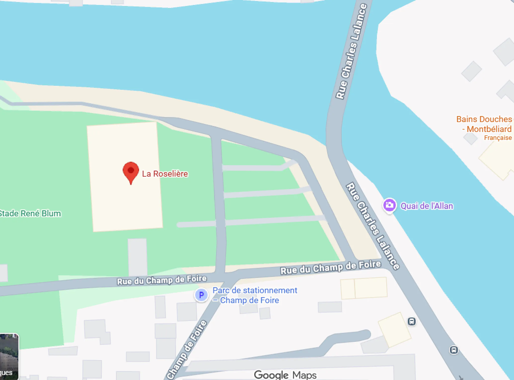
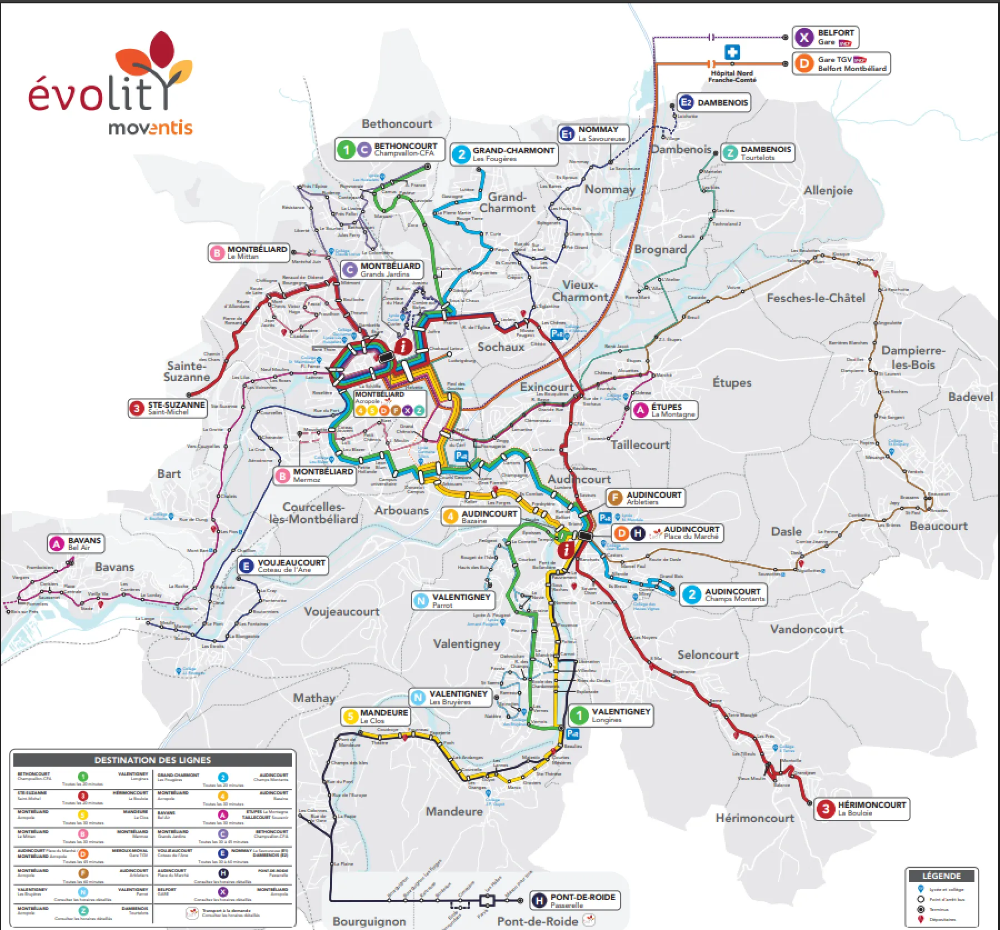

Infos pratiques
Le festival Juemlages sera gratuit afin de respecter notre valeur d'accessibilité. Seule la restauration et la buvette sera payante.
Pour les transports, vous pouvez venir en voitures et la garer sur le parking de la Roselière.
Plusieurs lignes de bus, qui partent de la gare, passent également à l'arrêt de la Roselière environ toutes les 10 minutes. La gare se trouve à 10 minutes à pied du parc du Près-la-Rose.
Pour l'hébergement, plusieurs hôtels sont à Montbéliard et aux communes alentours.
FAQ
Le festival est-il adapté aux familles et aux enfants ?
Oui. Des ateliers créatifs, des animations, des spectacles jeune public et des espaces dédiés font du festival un moment idéal à vivre en famille.
Y aura-t-il des stands de restauration ou des food-trucks ?
Oui, des points de restauration seront disponibles sur place, mettant en avant des spécialités locales.
Faut-il réserver pour participer aux activités ?
Pour les animationsen accès libre, aucune réservation n'est nécessaire.
Le festival est-il adapté aux familles et aux enfants ?
Oui. De nombreuses activités sont conçues pour les familles : ateliers créatifs, animations en plein air.
Puis-je venir avec mon animal de compagnies
Les animaux sont autorisés dans les espaces extérieurs du festival.